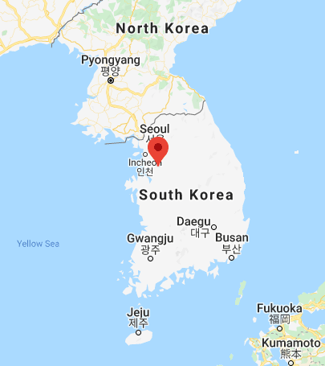
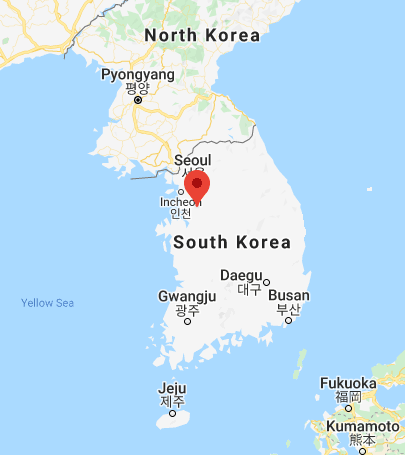

Matthew Oakley
Chief Steward
?>) 

Hi. I'm Matthew. I'm 54 years old, married for 17 years to the lovely Hyunsu Cha, and I have three daughters, Samantha, Tiffany and Sky. I was born in Derby in the United Kingdom and studied Classics (Greek and Latin) at Cambridge university. I have been a preacher since 1994, when I was a tent-maker missionary in France. I have lived in South Korea since 2002 and will later reside in North Korea.
In 1992, I had a dream about the return of Jesus Christ which strongly impacted me. I believe that Jesus Christ will return within my lifetime, and that harvest and judgment are imminent.
The Lord told me to start this ministry in July 2020.
Abiud Masinde
Shiba Kumar Sawod
Steward - Nepal
After witnessing the power of God in his family in the year 2000, Shiba converted to Christ and devoted himself to serving God. He left his hometown in Western Nepal to serve as a missionary in East Nepal, fighting the powers of darkness to bring souls into the Kingdom of God.
He has a bachelor's degree in education, an MDiv and is pursuing a DMin degree. He is married to Mandira and has a 15 month baby girl.
David Bhatti
Steward - Pakistan
Dayasagar Boddu
Steward - India
I am Pastor B. Daya Sagar. I'm 50 years old, and I have a loving wife, Stella Grace, and two blessed children. My son Vignan Sagar is studying B.Th and my daughter Florence Angel is studying +2.
I was born in a poor Hindu family. At the age of 18 I came to know that Jesus is the real God. In the year 1992 I was miraculously called by God for His wonderful ministry in Kakinada, India. In 1995 I had a vision about church Ministry in a place called Sanjay Nagar where God showed me to start His glorious work. The people here were ignored and believed in Hinduism and idol worship. We still have no church building and, By God's grace, we are doing church ministry under tents. We have faith in God and fully depend upon Him. I want to do God's ministry faithfully and genuinely until my last breath on this Earth.
Amosh Kadhka
Steward - Nepal
My name is Om Prakash Neupane. I was born a Hindu in the hill region of Nepal. I was devoted to Hindu gods and goddesses and the worship of ancient gods, idols, sun and moon. I read all the holy books of the Hindu faith, but found no salvation, love, healing or forgiveness. I grew tired of this religion.
One day, when I was 16 years of age, I fell badly sick. I would faint several times a day, but there was no other sickness inside me. My parents spent a lot of money and took me to several witch doctors and hospitals, but there was no treatment for me. One day, I heard about Jesus Christ who heals any kind of sickness. I wanted to know more about him and asked a nearby Christian Brother to pray for me. He came and prayed for me and gave me Gospel tracts. I read and they prayed, and gradually I recovered.
After my healing, I realized that there is only healing in Christ, both spiritually and physically. I started telling people about what God had done in my life and began to exercise faith. I prayed for many sick people who were demon possessed and I saw them healed. I was encouraged and, after a year, I attended Bible College. I have travelled to more than 35 districts, taking the Gospel from house to house and praying for the sick. I have preached to over 50,000 people during outreach, and hundreds of sick people have been delivered and healed. God called me to be a pastor and produce people to carry the Gospel, so with my wife I started Sitalnagar Abinash Church Ministry by faith.
We now have 5 house churches and 2 full time evangelists working in different mission fields doing evangelism and church planting. My Vision is to reach a million people with the good news of Jesus Christ by 2022, plant 5 churches, start a 3-month discipleship and leadership training program, make a children's education program, sponsor orphans and destitute children, and develop them through our Sunday School Program, distribute 1000 Bibles to the poor, start an orphanage with 5 Children, establish an anti human trafficking progaram, social development programs, and so on.
We are looking to partner with those who have a heart for international mission work, and are available to visit your church to share His grace.